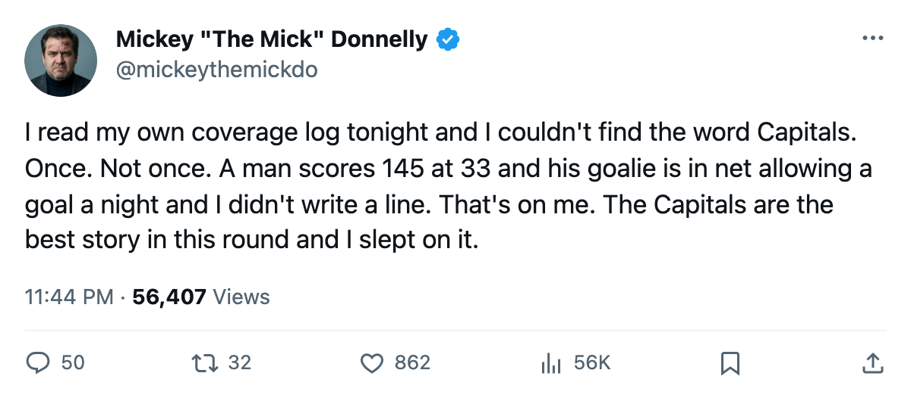
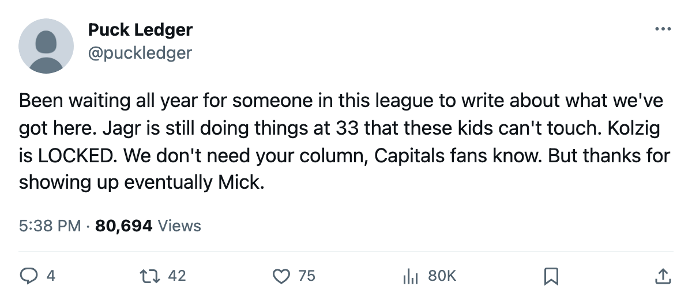

145 AT 33. 1.00 IN NET. 2-0 IN THE SERIES. YOUR DESK HASN'T WRITTEN THE WORD 'CAPITALS' ALL SPRING AND THAT IS MY FAILURE, NOT THEIRS.
Washington is the best team nobody covered this year. Jaromir Jagr turned 33 and scored 145 points. Olaf Kolzig is allowing one a night in the playoffs. I owe these men a column.
 Mickey "The Mick" DonnellyColumnist, ex-goalie · The Penalty Box
Mickey "The Mick" DonnellyColumnist, ex-goalie · The Penalty Box
Jaromir Jagr: 145 points at 33, leading the league, nobody noticed

The coverage log says what it says. Toronto fifty times. Edmonton thirty-four. Vancouver thirty-one. Washington, zero. Not once. Not a word from this desk, not from the gazette, not from the slot report with all its spreadsheet columns. The Capitals went 39-26-8, scored 287 goals, and I wrote about eleven other clubs before I mentioned them.
That is on me. Here is what I missed.
The 33-year-old who won the scoring title
 Jaromir Jagr90 is 33 years old. He played 82 games, scored 69 goals, added 76 assists, and finished with 145 points, first in the league. He averaged 22.1 minutes a night. His overall reads 90. He is not on the Bureau's Development Index risers list because he is not getting better. He is not on the fallers list either. He is simply producing 145 points at an age when most men in this league are trying to hold a fourth-line spot and collect their pension.
Jaromir Jagr90 is 33 years old. He played 82 games, scored 69 goals, added 76 assists, and finished with 145 points, first in the league. He averaged 22.1 minutes a night. His overall reads 90. He is not on the Bureau's Development Index risers list because he is not getting better. He is not on the fallers list either. He is simply producing 145 points at an age when most men in this league are trying to hold a fourth-line spot and collect their pension.
Doug Reimer's Index has no column for this. The form term is a measure of change, and Jagr is not changing. He is just scoring 145 points. You cannot put that in a spreadsheet and call it analysis. You have to watch the game.
In the playoffs, Jagr has 3 assists in 2 games. No goals yet. That will come. The thing that already came is the scoreboard:  Washington Capitals beat
Washington Capitals beat  Carolina Hurricanes 2-1 in Game 1, then 4-1 in Game 2. Two goals allowed in two games. The series moves to Carolina tomorrow.
Carolina Hurricanes 2-1 in Game 1, then 4-1 in Game 2. Two goals allowed in two games. The series moves to Carolina tomorrow.
The goalie nobody talks about
 Olaf Kolzig89 won the Vezina last season. He is 35. Nobody has said his name in a column this spring either. Through 2 playoff games: 2-0, a 1.00 GAA, .952 save percentage. Two games is a small sample. I know what a small sample is. I played this position. A man who lets in 1.00 across two games of playoff hockey while the other five skaters in front of him are not the best defensive unit in the league, that tells you he is dialed in, and it tells me I should have noticed it six weeks ago.
Olaf Kolzig89 won the Vezina last season. He is 35. Nobody has said his name in a column this spring either. Through 2 playoff games: 2-0, a 1.00 GAA, .952 save percentage. Two games is a small sample. I know what a small sample is. I played this position. A man who lets in 1.00 across two games of playoff hockey while the other five skaters in front of him are not the best defensive unit in the league, that tells you he is dialed in, and it tells me I should have noticed it six weeks ago.
The business side of the silence
Washington pays $55.92M in salary, took in $84.79M at the gate, and banked $20.44M in profit. That is the 5th-highest profit in the league. They sell tickets at $78 and put 16,203 butts in seats per game. Their prestige points are 584, third in hockey. Their club average morale is 96.8, second only to Toronto. These men are happy, they are profitable, and they are winning playoff series.
The per-point figure is $0.54M. Not the cheapest roster in the league, but well below the middle. They do not need a deadline move. They do not need a rebuild. They need somebody to write about them.
What comes next
Game 3 is at Carolina on 2005-04-13. The Hurricanes went 30-25-14 in the regular season and lost 19-13 on goals to Washington across 8 meetings.  Kevin Weekes84 has allowed 3.00 on .880 in these 2 games. Carolina's top playoff scorer is
Kevin Weekes84 has allowed 3.00 on .880 in these 2 games. Carolina's top playoff scorer is  Radim Vrbata73 with 1+1=2. That is not a team that solves Kolzig and Jagr in one night.
Radim Vrbata73 with 1+1=2. That is not a team that solves Kolzig and Jagr in one night.
I was wrong to let this team pass through my column count unnoticed. A 33-year-old who leads the league in scoring deserves better than a coverage log that skips him. Jagr told The Tunnel nothing this fortnight, so I will not put words in his mouth. But I will say this: 145 points, 1.00 GAA in the playoffs, 2-0 up, and I noticed none of it until now. The fault is mine. The Capitals are fine.

